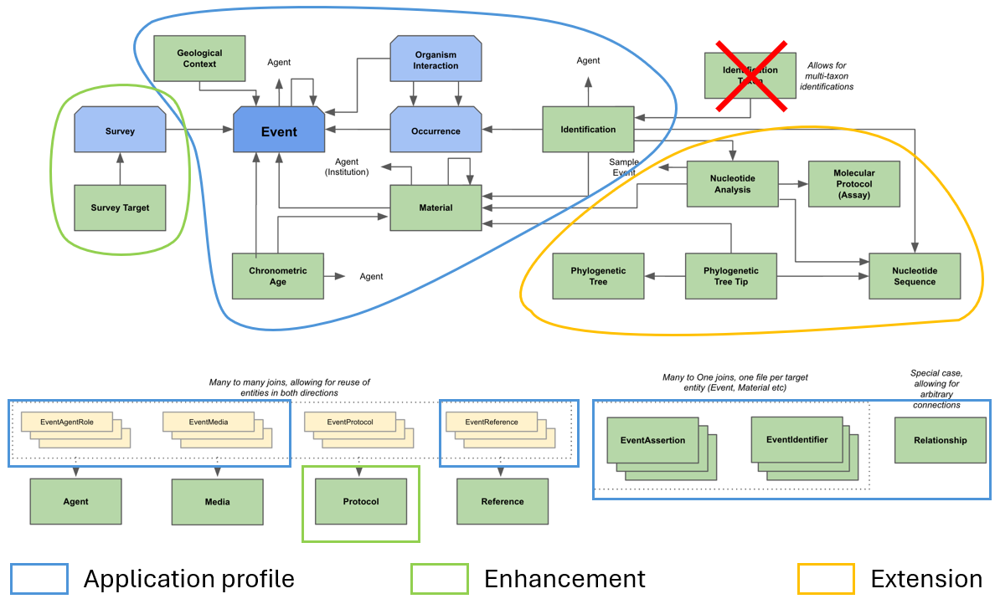
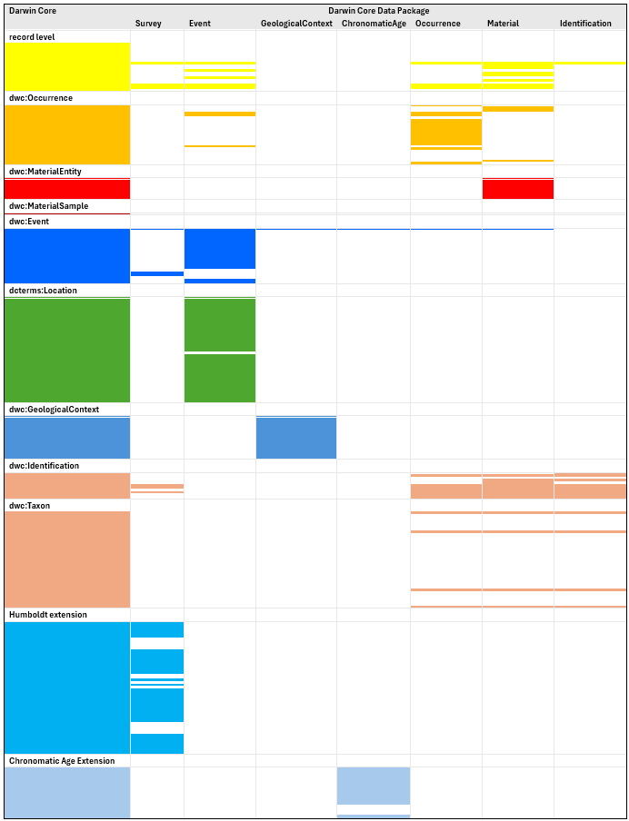
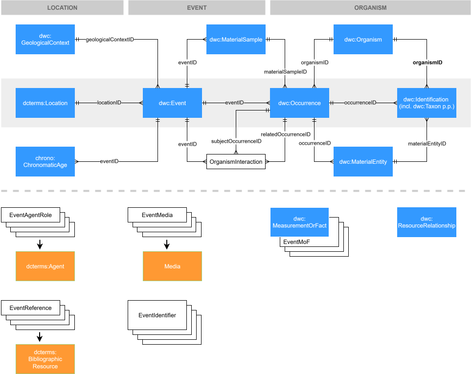

Scope and extensibility
I am just going to treat this as a scientific article I am reviewing and pick the whole thing apart. Not really appropriate for a GitHub issue, but I hope people will not mind.
When I look at the figure of the conceptual model, or the Quick Reference Guide, I see three things:
- An application profile, or a vehicle for Darwin Core: this is the Data Package
- enhancement of Darwin Core: new entities to be added to Darwin Core (or official Darwin Core extensions)
- extension of the Data Package with non-Darwin Core entities: this is (or should be) similar to the non-Darwin Core, or community, extensions to the Darwin Core Archive.

I think it is important to split this into three separate bodies of work for the following reasons. First, if you have a big job, you want to split it into smaller parts. Second, I think technically only the enhancement bit is governed under the Vocabulary Maintenance Standard, which means community consensus is needed for changes and additions, so you want to make that part as small as possible. Finally, and most importantly, you want to make sure that the Data Package works with just Darwin Core before starting to accessorise.
Application profile
For me the two important test cases for a Darwin Core Data Package are:
- It should enable delivery of all data that we can currently deliver with the Darwin Core Archive (without non-Darwin Core extensions and excluding Taxon Core data sets)
- We should be able to do that without having to add new terms to glue Darwin Core entities together.
When we look at how Darwin Core terms are distributed over the tables in the Darwin Core Data Package, we see the following:

-
With the exception of the Identification table, which is dangling, all other tables have foreign keys to the Event table, so the star model of the Darwin Core Archive is very much still there. In fact, the conceptual model is essentually the Event Core from the Darwin Core Archive with the Extended MeasurementOrFact extension. Even the direction of the relationships between the Event table and the other tables—they are all one-to-many—reflects the core–extension relationship, rather than the relationship between the entities in Darwin Core. For example,
dwc:GeologicalContextis in the Event (or Occurrence) Core, so has a one-to-many relationship withdwc:Event, in the Darwin Core Archive, but the GeologicalContext table has a many-to-one relationship with the Event table in the Darwin Core Data Package. Combined with the fact thatgeologicalContextIDis required and has to be unique, this will cause problems. -
dwc:MaterialSampleanddwc:MaterialEntityhave been lumped into a Material table, which is not directly connected to the Occurrence table. This makes the Darwin Core Data Package unfit for purpose for collections data as well as for environmental DNA data. -
The Identification table is not linked to any other tables when using only Darwin Core terms. They are linked to the Occurrence and Material tables with
dwcdp:basedOnOccurrenceIDanddwcdp:basedOnMaterialEntityID. Identifications are annotations, so they need to have a target.dwc:Identifications are not stand-alone objects, they depend ondwc:Occurrenceordwc:MaterialEntity(ordwc:Organism). If thedwc:Occurrenceordwc:MaterialEntityis not there, there cannot be adwc:Identificationeither. Therefore,dwc:occurrenceIDanddwc:materialEntityIDshould be used instead. Identifications cannot be based on their target of course, as that would be circular. -
The Occurrence and Material table contain all the properties of the Identification table. The reason for this that was given to me is to support insufficiently structured databases. You cannot do this if you want to create a Darwin Core Data Package that can be used by everyone, as it favours some parts of the community over other parts. Herbarium databases typically have a one-to-many relationship between specimens and identifications, because we need to record the identification history, but a one-to-one-to-one relationship between specimens, occurrences and events (except that they do not have occurrences), so for herbaria it might be easier to have all the properties of the Occurrence and Event tables in the Material table. We do want to use the Darwin Core Data Package, however, to be able to resolve the many-to-one relationships between specimens and occurrences and between occurrences and events that we know exist in our data. The Darwin Core Data Package requiring a minimum of structure, even when people think they do not need that in their database, is not a bad thing. People can always use the Darwin Core Archive. If they want to use the Darwin Core Data Package, they have to go all in.
-
Likewise,
dcterms:Locationis lumped withdwc:Eventsin the Event table. That is a lot of extra fields in the Event table. Is there a rational for splitting offdwc:GeologicalContextfrom the Event Core and notdcterms:Location? I think for many people havingdcterms:Locationin the Event table makes data delivery harder rather than easier. I can also imagine that, once there is aneco:Survey, a link todcterms:Locationmight be needed fromeco:Survey.
The figure below shows how Darwin Core entities hang together in my mind. I have divided the entity-relationship diagram in the top half of the figure into three zones: location, event and organism. I should say that, as a biologist, my expertise is very much at the organism end of the diagram, so I might not have hooked up everything correctly in the lefthand side of the diagram.

The middle row in the entity-relationship diagram has the core classes of Darwin
Core, dcterms:Location, dwc:Event, dwc:Occurrence and dwc:Identification
that all Darwin Core data sets must have. The top and middle rows of the diagram
contain classes that are optional but are important for different parts of the
domain. One could visualise that one can squeeze the top and bottom rows into
the middle row and end up with the Occurrence Core of the Darwin Core Archive.
Additionally, the following may be noted:
-
I have split the Material table into
dwc:MaterialSampleanddwc:MaterialEntity. I do not know if it exactly corresponds with their meaning in Darwin Core, but I have loosely coupleddwc:MaterialEntitywith ‘specimen’ anddwc:MaterialSamplewith ‘sample’. The difference between those two is in how they relate todwc:Occurrence, i.e.,dwc:MaterialEntityhas a many-to-one relationship withdwc:Occurrenceanddwc:MaterialSamplea one-to-many relationship. This is also whydwc:MaterialSampleis in the ‘event’ zone anddwc:MaterialEntityin the ‘organism’ zone of the diagram. Some data sets I downloaded from the GBIF Oceania Metabarcoding Data Toolkit have the samedwc:eventIDanddwc:materialSampleIDand the data I deliver myself to ALA has the same values fordwc:occurrenceIDanddwc:materialEntityID, so I got it right at least some of the time.It should be noted that in the Herbarium Berolense data set in the test IPT, the ‘MaterialSample’ that is given in the
materialEntityTypecolumn in the Material table is theggbn:MaterialSample, not thedwc:MaterialSamplein the sense it is used here. Theggbn:MaterialSample(again, in the sense it is used in the data set) has a many-to-one relationship withdwc:MaterialEntity. In this data set, the data of the sample that is taken from the specimen (or which the specimen is a voucher for) is provided in the Material table and the specimen (ordwc:MaterialEntity) data is delivered in the Occurrence table. This is made to work by using thedwc:catalogNumberas thedwc:eventIDin both the Occurrence and Material table (it is also used indwc:occurrenceRemarksin the Occurrence table). Thedwcdp:eventCategoryis also given as ‘DNA extraction’, which might be some type ofdcterms:Eventbut, at least in my mind, not adwc:Event. The examples fordwcdp:eventCategoryin the Quick Reference Guide include ‘nucleotide analysis’, which does the same thing, so it might be intended, but it makes thedwc:Eventmeaningless and breaks the chain of data fromdwc:Locationtodwc:Identification, so is not a good idea.I think the
dwcdp:derivedFromMaterialEntityID, etc., might be intended to deal with this situation, but I think it is better to keep Darwin Core reasonably simple and use a GGBN extension to deal with the relationship between specimens and DNA sequences. So, use Darwin Core for what potentially highly disparate data sets have in common and community extensions for where they differ, rather than try to shoehorn everything into Darwin Core. -
dwcdp:Surveyanddwcdp:SurveyTargethave been left out, simply because they are not in Darwin Core yet. Therefore they are enhancements. Most of the properties of the Survey table are in the Humboldt Extension to Darwin Core, but the class itself has not been defined, so I am assuming the properties currently belong to thedwc:Event. -
It would be good to have an
OrganismInteractionclass in Darwin Core, but I think it can already be used in the Darwin Core Data Package, as it is essentially adwc:ResourceRelationshipand is the key–value list that is the object ofdwc:associatedOccurrencesin table form.
The lower half of the figure I have kept largely intact. The things on the lefthand side are strictly speaking extensions, but they are so common and used throughout the domain, even though they are not part of the domain, so they are probably best seen as part of the core. There are Dublin Core classes for Agent, Media and Reference that can be used, but there is nothing like that for Protocol, so that should be added to Darwin Core as an enhancement.
For the Media, the pivot tables have a number of properties that belong in the
Media table. As mediaID is required and has to be unique in the pivot tables,
there is really no reason to have these properties in the pivot tables.
dwc:MeasurementOrFact and dwc:ResourceRelationship are Darwin Core’s native
extension points, for scalar values and resources respectively. I do not
understand why the Darwin Core class names are not being used. Especially the
change from ‘MeasurementOrFact’ to ‘Assertion’ does not make sense.
Just about the implementation in the IPT, I have created three data resources in
the test IPT and had a hell of a time getting data sets published. Most of this
was because I could not use a database connection, so I had to use CSV, but when
I had those issues resolved, publication still failed because of data quality
issues. Publication first failed on coordinatePrecision of ‘0’, which was my
fault, so I fixed the function that creates those, but after that it also failed
on a minimumElevation of 9000 (because someone had forgotten to enter the
unit) and then on a negative minimumDepth (which was on the label).
Now that I was doing manual publications (and was using only a small part of our data set), I could fix the data in the database and start over, but, if you have scheduled publications and have people (who make errors) entering and editing data between publications, this is going to be a major issue. Validation is great, but it should be restricted to errors that break the data set, such as missing keys or duplicate keys. Making data quality part of the validation places the responsibility for data quality in the hands of the wrong people and will seriously impact the usability of the Darwin Core Data Package.
Enhancement
OrganismInteraction, Survey and SurveyTarget can be quite easily added to
Darwin Core, or the Humboldt Extension in case of the latter two.
Adding Protocol will probably be a bit more work. I find it a bit suspect that
there are no examples for protocolTypeVocabulary. You want some of those
before creating the class.
Extension
There should be an avenue for extending the Darwin Core Archive for particular use cases that are not entirely covered by Darwin Core. The current approach taken here seems to be to suck everything into Darwin Core, perhaps as official Darwin Core Extensions, and create a monolith, but I think their should be room for community extensions.
Extensions should not change anything to the tables already in the Data Package (trying very hard to avoid the word ‘core’), so there should be no foreign keys to tables in the extension from tables in the core. In the current Data Package there are foreign keys from the Identification table to the NucleotideAnalysis and NucleotideSequence tables.
With this rule in place, I think many extensions of the Darwin Core Archive can be made suitable for the Darwin Core Data Package by creating resource descriptions that can be stitched into the manifest of the Darwin Core Data Package. Because of the different structure of the Data Package, multiple extensions, e.g., all the GGBN extensions or all the Germplasm extensions, in the Darwin Core Archive can be combined into a single extension for the Darwin Core Data Package. I myself would not mind an extension for collections data that has tables for preparations, acquisitions, loans and exchange and nomenclatural types. This might eventually turn into an official Darwin Core extension, but there will be a very long time that it is not.
Another way to deal with community-specific data is to not have a single Darwin
Core Data Package, but have different Data Packages for different communities
that use the part of Darwin Core that they need—but at least the
dcterms:Location, dwc:Event, dwc:Occurrence and dwc:Identification
classes—together with tables for subdomain-specific data. I am a bit worried
that people will think that the existence of the Darwin CoreData Package
obviates the need for community Data Packages like CamTrapDP.
The Herbarium Berolense test data resource I mentioned before has one-to-one
relationships between the Event, Occurrence, Material, NucleotideAnalysis and
NucleotideSequence tables. This indicates to me there is something wrong with
the data model. Also, there will be stiff opposition to adding
PhylogeneticTree and PhylogeneticTreeTip classes to Darwin Core from anyone
who has the least bit of knowledge of phylogeny.